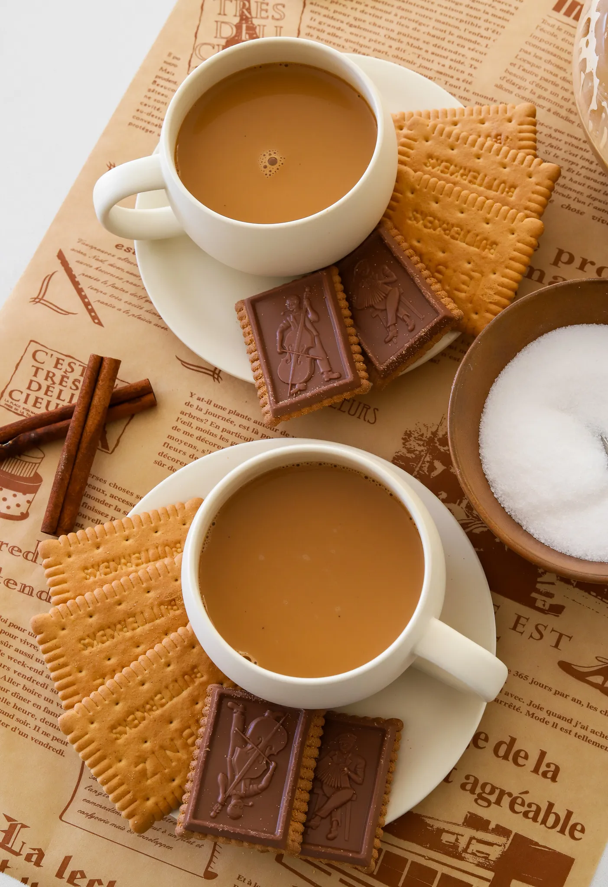

Drinks
Karak Tea
PREP TIME: 5 MINUTES
COOK TIME: 15 MINUTES
TOTAL TIME: 20 MINUTES
YIELDS: 4
Creamy, bold, and deeply spiced, karak tea is the Middle Eastern
cousin of chai, known for its rich flavors and comforting warmth.
Infused with cardamom, cinnamon, and ginger, it’s simmered slowly
to create a velvety, fragrant cup. Perfect for chilly mornings or
whenever you need a little extra warmth, this tea never disappoints.
JUMP TO RECIPE

Drinks
Karak Chai
PRINT RECIPE
PIN RECIPE
Creamy, bold, and deeply spiced, karak tea is the Middle Eastern
cousin of chai, known for its rich flavors and comforting warmth.
Infused with cardamom, cinnamon, and ginger, it’s simmered slowly
to create a velvety, fragrant cup. Perfect for chilly mornings or
whenever you need a little extra warmth, this tea never disappoints.
Ingredients
- 2 cups water
- 2 cups evaporated milk
- 6 to 8 cardamon pods, lightly crushed
- 3 cinnamon sticks
- 1 ginger cube (ora small piece of freshy ginger)
- 1/4 cup light brown suger (adjust to taste)
- 1 teaspoon vanilla extract
- 4 black/red tea bags
Instructions
-
In a medium pot, combine the water, evaporated milk, cardamon
pods, cinnamon sticks and ginger. Bring the mixture to a gentle
boil over medium heat.
-
Once is starts bubbling reduce the heat to low and let it simmer
for about 5 to 7 minutes. This allows the spices to infuse the
milk and water with their rich, warm flavors.
-
Place the tea bags into the pot and let them steep for 3 to 5
minutes, depending on how strong you like your tea. Stir
occasionally to help the tea blend with the spiced milk.
You'll know it's ready when the color turns a deep caramel
brown. Stir in the brown sugar until it dissolves completely.
-
Add the vanilla extract and let it simmer for another minute to
enhance the flavor.
-
Remove the pot from the heat and carefully strain the tea into
cups to remove the spices and tea bags.
- Serve hot and enjoy!